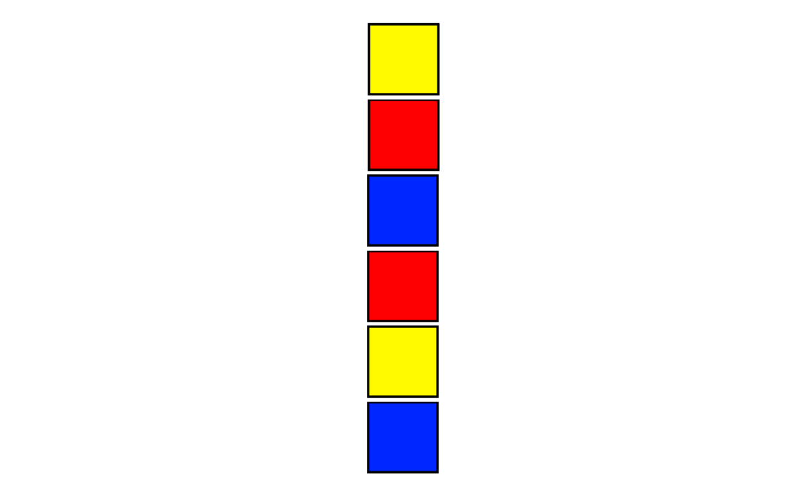
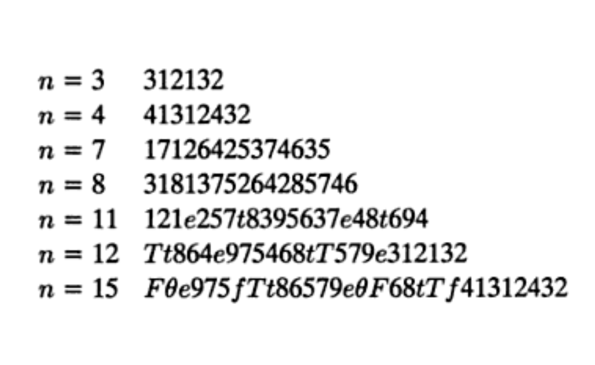
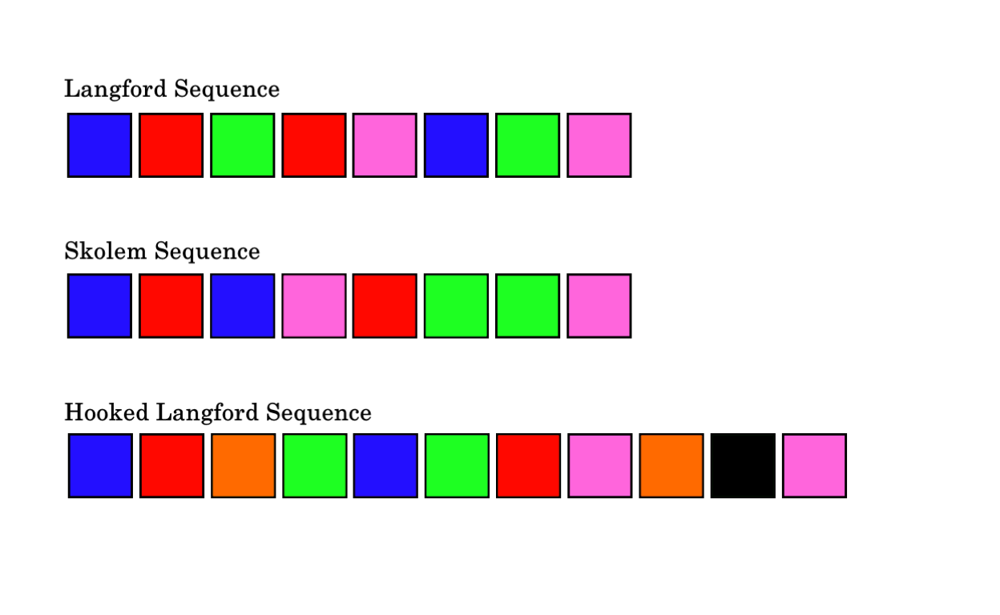
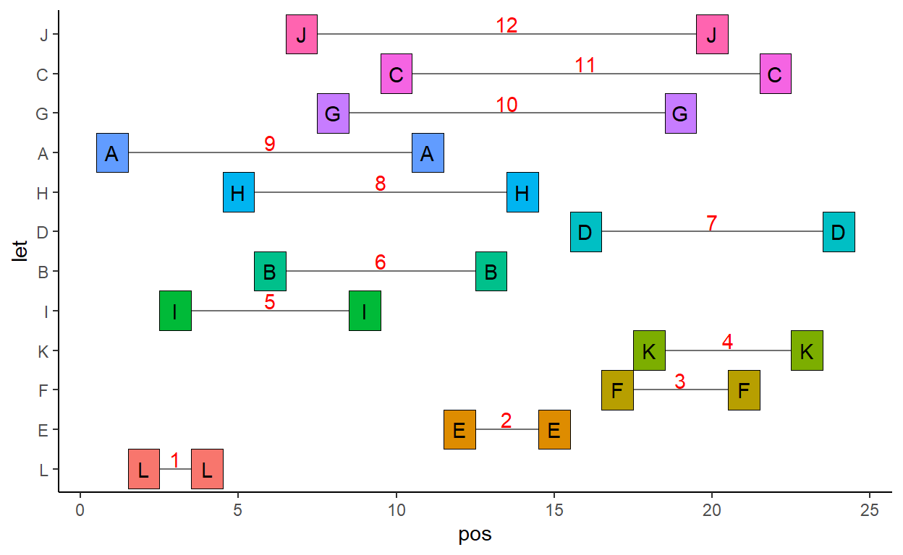

Describing Langford and Skolem sequences and how to search for them in R.
In 1958, the mathematician C.D. Langford was watching his son play with blocks. He wrote:
There were two of each color, and one day I noticed that he had placed them in a single pile so that between the red pair there was one block, two between the blue pair, and three between the yellow. I then found that by a complete rearrangement I could add a green pair with four between them.

The general problem was summarized by Hayasaka & Saito (1979) as: “Given \(2n\) numbers, two each of the numbers \(1, 2, …., n\) to find whether they can be arranged in a row in such a way that the two occurrences of each number \(k\) are separated by exactly \(k\) other elements of the row.
Langford actually discovered several examples for various different number of blocks. Here are some examples of his sequences:

What one might notice is that all the solutions are for a number of blocks \(n\) that are divisible by 4, or one less than a number that is divisible by 4. A bit more explanation for why this is so can be found at Nick Berry’s excellent blog.
As \(n\) increases, there are an increasing number of Langford Sequences. There is only one solution for \(n=3\) & \(n=4\), 26 solutions for \(n=7\), 150 for \(n=8\), 17,792 for \(n=11\), 108,144 for \(n=12\) ….. 46,845,158,056,515,936 for \(n=24\) ! Obviously, trying to find all solutions for any given \(n\) is computationally intensive!
Although Langford sequences can only be found when \(n\) is divisible by 4 or when \(n+1\) is divisible by 4, there is an alternative type of Langford sequence called a Hooked Langford Sequence which can be found for all values of \(n\). A Hooked Langford Sequence is one where another block/letter is inserted in the penultimate position in the sequence.
At the same time as Langford wrote his piece, a related phenomenon was being independently researched by a Swedish mathematician, Thoralf Skolem, who was trying to form sequences of \(2n\) blocks with intervals of \(0,1,2,3 ... n\).
My aim here is to write a small script that can find these sequences. Below is an image of each type of these sequences:

Say we have \(2*8\) blocks, let’s represent them with letters. We can then generate a randomly sample sequence of these letters as a starting point. A random shuffle is unlikely to be a Langford sequence. We an check by finding the differences between the positions/indexes of each letter in the vector:
x <- rep(LETTERS[1:8],2)
set.seed(1)
y <- sample(x)
y
[1] "E" "F" "A" "D" "C" "B" "C" "G" "F" "A" "B" "G" "E" "H" "D" "H"This gets the difference (number of letters between) the pairs of A’s:
abs(diff(which(y=="A")))-1 #6
[1] 6Likewise for the D’s and the H’s:
abs(diff(which(y=="D")))-1 #10
[1] 10
abs(diff(which(y=="H")))-1 #1
[1] 1We can get the results for all the individual letters with a loop:
res<-NULL
for(i in 1:8){ res[[i]] <- abs(diff(which(y==LETTERS[i])))-1 }
names(res)<-LETTERS[1:8]
res
A B C D E F G H
6 4 1 10 11 6 3 1 This is fine for one randomly sampled sequence, but when finding Langford sequences, we might want to check many sequences, so it is better to have a faster function. match() seems to be pretty fast for this purpose:
langford <- function(x) {
ux = unique(x)
mux = match(x, ux)
ans = integer(length(ux))
for(i in seq_along(x)) ans[mux[i]] = i - ans[mux[i]]
return(setNames(ans - 1L, ux))
}
langford(y)
E F A D C B G H
11 6 6 10 1 4 3 1 Say we wanted to find a solution for 8 blocks. My strategy here is to keep sampling sequences until one satisfies the criteria. The way to check whether a sequence is a Langford sequence is to sort the intervals between each pair of letters and then ask if this is equal to 1:8. If it is, then we break and return that sequence.
set.seed(17)
while(TRUE) {
samps <- sample(x)
tmp <- sort(langford(samps))
if(sum(tmp==c(1:8))==8)
break
}
samps
[1] "G" "F" "D" "A" "E" "H" "A" "D" "F" "G" "E" "C" "B" "H" "B" "C"We can see that this is a Langford Sequence:
sort(langford(samps)) ## the interval between pairs of letters in the sequence```
B A C D E F H G
1 2 3 4 5 6 7 8 This is obviously a brute force approach, and not a cute algorithm that optimally finds solutions. We can generalize for any ‘n’:
get.langford <- function(n){
while(TRUE) {
x <- rep(LETTERS[1:n],2)
samps <- sample(x)
tmp <- sort(langford(samps))
if(sum(tmp==c(1:n))==n)
break
}
return(samps)
}I could add some if-stop ‘s to this to prevent someone from entering a \(n\) that will not work (e.g. 5,6). Also, if someone wanted to use an \(n\) of >26 then we’d have to use combinations of letters. I don’t recommend this though, as the function is pretty slow for anything greater than \(n=12\).
I think the strategy could also be optimized such that rather than randomly sampling sequences, the sequences tested are done so in a more systematic fashion.
Nevertheless, here it is working for \(n=12\).
set.seed(77)
lang12 <- get.langford(12)
lang12
[1] "A" "L" "I" "L" "H" "B" "J" "G" "I" "C" "A" "E" "B" "H" "E" "D"
[17] "F" "K" "G" "J" "F" "C" "K" "D"
sort(langford(lang12))
L E F K I B D H A G C J
1 2 3 4 5 6 7 8 9 10 11 12 We can try and plot this with ggplot:
library(tidyverse)
# dataframe of position of each letter
df <- data.frame(pos = 1:24, let = lang12)
# get distances between each letter
lang12dif <- sort(langford(lang12))
# record start and end position of each letter
# to make line between them
df1 <- df %>% group_by(let) %>% filter(pos==min(pos))%>%
full_join(data.frame(
let = names(lang12dif),
diff = lang12dif
)
) %>%
mutate(end = diff+pos+1)
# reorder levels so can arrange in order
df$let <- factor(df$let, levels=names(lang12dif))
df1$let <- factor(df1$let, levels=names(lang12dif))
df %>%
ggplot() +
geom_segment(data=df1, aes(x=pos, xend=end, y=let, yend=let), color="gray44")+
geom_tile(data=df, aes(x=pos, y=let, fill=let), color='black') +
geom_text(data=df, aes(x=pos, y=let, label=let)) +
theme_classic() +
geom_text(data=df1, aes(x=(pos+end)/2, y=let, label=diff),color='red', nudge_y = 0.25) +
theme(legend.position = 'none')
This is simply just a change in the if statement prior to the break. Here we are looking for sequences that start with a gap of 0, and not 1.
skolem <- function(n){
while(TRUE) {
x <- rep(LETTERS[1:n],2)
samps <- sample(x)
tmp <- sort(langford(samps))
if(sum(tmp==c(0:(n-1)))==n)
break
}
return(samps)
}
set.seed(88)
sk <- skolem(8)
sk
[1] "B" "D" "B" "G" "E" "E" "F" "C" "G" "D" "A" "H" "F" "A" "C" "H"
sort(langford(sk))
E B A H G F C D
0 1 2 3 4 5 6 7
AA Hooked Langford Sequence is one where another block/letter is inserted in the penultimate position in the sequence. They can be found for any \(n\):
The code for these Hooked Langford Sequence is here:
hooked.langford <- function(n){
while(TRUE) {
x <- rep(LETTERS[1:n],2)
samps <- sample(x)
samps <- c(head(samps,((n*2)-1)), "X", tail(samps, 1))
tmp <- sort(langford(samps))
if(sum(tmp==c(1:n))==n)
break
}
return(samps)
}
Some examples:
set.seed(1)
h1 <- hooked.langford(5)
h1
[1] "A" "D" "B" "E" "A" "E" "D" "C" "B" "X" "C"
sort(langford(h1))
E C A D B X
1 2 3 4 5 9
set.seed(11)
h2 <- hooked.langford(9)
h2
[1] "E" "H" "C" "H" "E" "D" "F" "G" "I" "A" "G" "C" "B" "D" "A" "I"
[17] "F" "X" "B"
sort(langford(h2))
H G E A B I D C F X
1 2 3 4 5 6 7 8 9 17